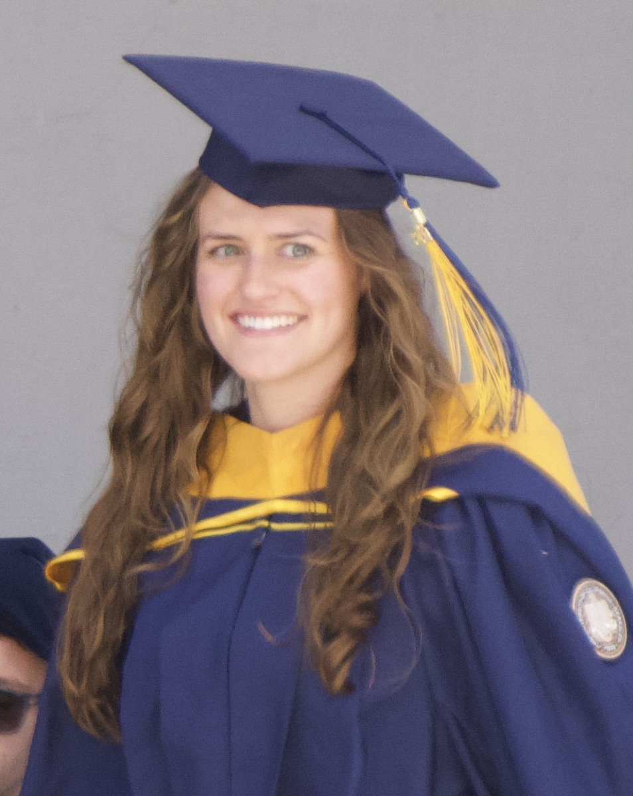

About me

I studied biomedical engineering at Bucknell University, where an internship at KLS Martin introduced me to software as a medical device. That experience pulled me toward the technology side of healthcare and led me to Johnson & Johnson's Technology Leadership Development Program.
In the program I worked on data engineering and analytics projects and on a software-enabled surgical device that combined ablation, CT, ultrasound, and 3D modeling. I then joined the Digital Surgery Platform team as a Customer Success Engineer, where I bring connected-device, edge, and IoT technology into clinical systems. Most recently I led the global onboarding of a new generation of surgical energy devices onto the platform.
Along the way I wanted deeper technical skills, so I completed an M.S. in Molecular Science and Software Engineering at UC Berkeley. I chose the program because it applies Python, C++, machine learning, computational modeling, and high-performance computing to real scientific problems. I've put those skills to work in short-term assignments with J&J's Digital Measures & Biosensors and Imaging Analytics teams, and in a clinical decision-support tool I'm building with UCSF's Bakar Computational Health Sciences Institute.
The work I enjoy most turns complex health data into something clinicians, scientists, and patients can act on.
Education
-
2024 to 2026
M.S. Molecular Science and Software Engineering
University of California, Berkeley
Coursework in machine learning algorithms, data science, high-performance computing, numerical algorithms for quantum chemistry, and software engineering for scientific computing. Capstone with UCSF's Bakar Computational Health Sciences Institute.
-
2017 to 2021
B.S. Biomedical Engineering
Bucknell University
Dean's List, and Patriot League Academic Honor Roll. NCAA Division I varsity rowing. Studied abroad at the University of Queensland.
Experience
-
2023 to now
Customer Success Engineer, Digital Surgery Platform
Johnson & Johnson MedTech
Led global onboarding of about 80,000 connected surgical devices, wrote and ran user acceptance testing, and built global training to drive adoption.
-
2024 and 2025
Short-term assignments: Digital Measures & Biosensors, Imaging Analytics
Johnson & Johnson
Evaluated wearable and digital health technologies for clinical trials, and implemented CT image analysis algorithms for oncology clinical trials.
-
2021 to 2023
Technology Leadership Development Program
Johnson & Johnson
Rotations in data analytics, a surgical case-management platform, and a software-enabled surgical device. Built a ticket-analytics tool adopted by about 1,500 users.
-
2018 to 2020
Internships and research
KLS Martin, W.L. Gore and Associates, Bucknell University
Supported an FDA 510(k) submission, ran materials quality testing, and co-authored a Biomedical Engineering Society conference abstract on dental materials testing.
Skills
- Programming
- Python, C++, SQL, MATLAB, Git
- Machine learning
- CNNs, LSTMs, transformers, autoencoders and VAEs, scikit-learn, TensorFlow and Keras, PyTorch
- Modeling and simulation
- Finite element analysis (COMSOL), Monte Carlo methods, molecular dynamics, numerical methods, statistical modeling
- Biomedical data
- ECG and EMG signals, CT imaging, cheminformatics with RDKit, clinical data (OMOP, Epic)
- High-performance computing
- MPI, OpenMP, CUDA, NERSC Perlmutter supercomputer
- Software practices
- Continuous integration with GitHub Actions, Docker, automated testing, CMake
- Regulated medtech
- User acceptance testing, requirements, FDA 510(k) support, training and documentation